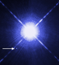

white-dwarf

Definition: A white dwarf is a stellar core remnant composed mostly of electron-degenerate matter. A white dwarf is very dense: its mass is comparable to the Sun's, while its volume is comparable to the Earth's. A white dwarf's low luminosity comes from the emission of residual thermal energy; no fusion takes place in a white dwarf. The nearest known white dwarf is Sirius B, at 8.6 light years, the smaller component of the Sirius binary star. There are currently thought to be eight white dwarfs among the hundred star systems nearest the Sun. The unusual faintness of white dwarfs was first recognized in 1910.: 1 The name white dwarf was coined by Willem Luyten in 1922.
Source: Wikipedia
Wikipedia Page (Something wrong with this association? Let us know.)
Wikidata Page (Something wrong with this association? Let us know.)
Occurs in: